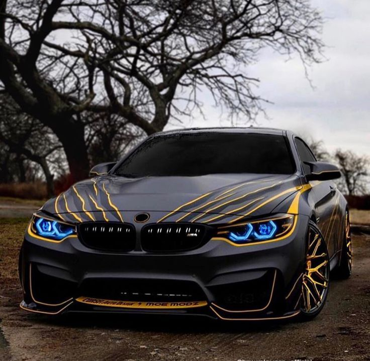
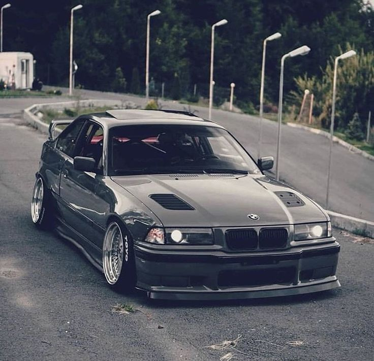

Salom mening ismim Abdulloh
BMW haqida malumot istaysizmi
Bayerische Motoren Werke AG , odatda BMW (nemischa talaffuzi: BMW) nomi bilan ataladi, bosh qarorgohi Myunxen , Bavariya , Germaniyada joylashgan hashamatli avtomobillar va mototsikllarni ishlab chiqaruvchi koʻp millatli nemis korporativ ishlab chiqaruvchisi. Korporatsiya 1916-yilda samolyot dvigatellari ishlab chiqaruvchi sifatida tashkil etilgan.
Avtomobillar BMW, Mini va Rolls-Royce brendlari ostida, mototsikllar esa BMW Motorrad brendi ostida sotiladi. 2017-yilda BMW 2 279 503 ta avtomobil ishlab chiqarish bilan dunyodagi oʻn toʻrtinchi yirik avtomobil ishlab chiqaruvchisi boʻldi.Kompaniya avtosportning muhim tarixiga ega, ayniqsa gastrol avtomobillari , sport avtomobillari va Men TT orolida.
Bayerische Motoren Werke AG
Turi Aksiyadorlik jamiyati
Xizmatlari Avtomobilsozlik
Egasi
Rapp Motorenwerke Bayerische Flugzeugwerke
Fahrzeugfabrik Eisenach
Qachon asos solingan 1916-yil 7-mart
Joylashuvi Germaniya Myunxen
Hududiy xizmati Butun dunyoda (Rossiyadan tashqari)
Asoschi(lari)
Camillo Castiglioni Frans Jozef Popp
Karl Rapp
Prezidenti Oliver Zipse
Bosh kotibi Norbert Reithofer
Mahsulot(lar)i
Avtomobillar
Mototsikllar
Brendlari
Avtomobillar Alpina BMW BMW i BMW M BMW X DriveNow Mini Rolls-Royce Mototsikllar
BMW Motorrad
Daromadi 111,239 milliard yevro (2021)
Aylanma daromadi 142 610 000 000[2]
Operatsion foydasi 16,060 milliard yevro (2021)
Boyligi 229,527 milliard yevro (2021)
Kapitallashtirish 75,132 milliard yevro (2021)
Sof foydasi 12,463 milliard yevro (2021)
Ishchilar soni 118 909 (2021)
Vebsayti
https://www.bmw.com
https://www.bmwgroup.com
BMW shtab-kvartirasi Myunxenda joylashgan va Germaniya, Braziliya, Xitoy, Hindiston, Meksika, Gollandiya, Janubiy Afrika, Buyuk Britaniya va Qoʻshma Shtatlarda motorli transport vositalarini ishlab chiqaradi. Kvandlar oilasi 1959-yilda aka-uka Gerbert va Xarald Kvandtning kompaniyani bankrotlikdan qutqarib qolgan sarmoyalaridan soʻng kompaniyaning uzoq muddatli aktsiyadori boʻlishdi (qolgan ulushlar ommaviy floatga tegishli).

